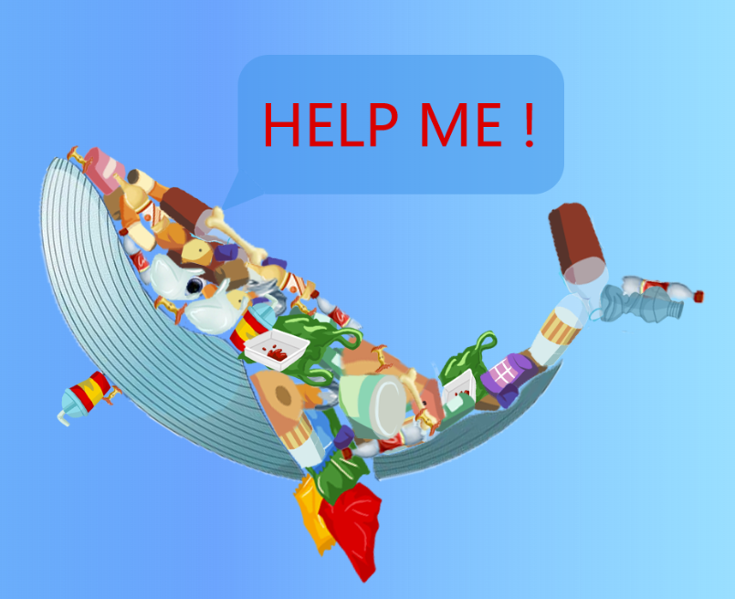
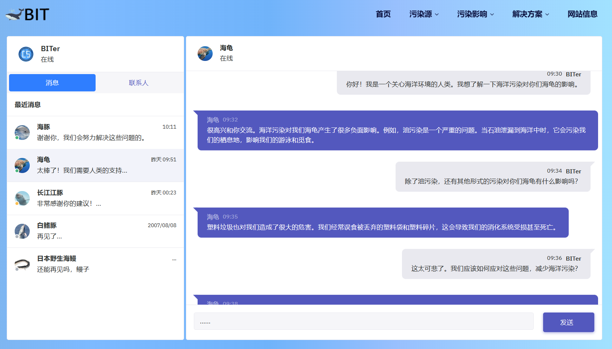

访问方式
可以通过本地打包下载后的html文件访问或线上访问。
本地访问
解压在乐学下载好的压缩包，打开“B所有制作文件”文件夹，打开“网页(所有页面)”文件夹，点击“index.html”即可。
由于“解决方案”网页内使用的视频文件体积过大，网页采用了在线播放的方式，因此在访问此页面的时需要保持联网状态。
推荐使用“1920*1080”分辨率的屏幕，在“124%”系统缩放比例下使用“EDGE”浏览器进行访问以达到最好的视觉效果，浏览器缩放比例为“100%”。使用其他分辨率或缩放比例或者使用手机访问可能会出现排版错误。
在线访问
网页使用github进行托管，并使用Netlify和Cloudflare的page服务提供在线访问，点击以下任意链接可在线浏览本网站。
线路1(Netlify):点击访问
线路2(Cloudflare):点击访问
网站架构
网站架构图
每个页面的进入方式
在文件夹中的进入方式：
点击上图编号对应的html文件即可进入，例如，p1:污染源对应p1.html文件。
在网页内部进入方式
除去p21s2:对话海龟、p21s3:对话长江江豚、p32s2:法律与法规三个页面外，其他页面可点击导航栏直接进入，如下图所示：
p21s2:对话海龟、p21s3:对话长江江豚需要点击页面的如下图所示的位置进入：
p32s2:法律与法规需要点击页面的如下图所示的位置进入：
查看源码的方式
右键选择打开方式为用记事本打开，可查看网页源码：
创意设计说明
前言：本创意说明将对网页的图片文字信息之外的内容进行介绍。
主题：海洋污染的影响和解决方案
配色：
蓝色：选用蓝色为背景颜色，象征海洋。将网页背景设置为从淡蓝到深蓝的渐变，模拟海水的颜色变化。
红色：选用红色作为背景的点缀，象征海洋中的污染。
黑色：网页内文字的颜色。
白色：网页内黑色文字的背景颜色，也作为白色文字的背景颜色。
网页内容：
“首页”页面：
由各种垃圾拼接成的鲸鱼，体现海洋生物正在遭受的被海洋垃圾包围的处境。
“污染源”页面：
利用js函数和css样式将鼠标替换为一个捕捞网，移动到海洋垃圾的图片时会弹出对应的文字信息，点击可跳转对应网页查看更详细的信息。
“污染影响”页面的“海洋生物的控诉”子页面：
模仿微信的聊天页面，左侧是联系人，右侧是对话，点击“海豚”、“海龟”、“长江江豚”可以跳转到对应的对话，点击“白鳍豚”、“日本野生海鳗”会提示“生物已灭绝”或“数量稀少”等提示信息。
“污染影响”页面的“生物灭绝进行时”子页面：
采用时间轴的形式，按时间顺序对濒临灭绝的海洋生物进行介绍。
“污染影响”页面的“小游戏”子页面：
游戏名为“大鱼吃‘小鱼’”，“小鱼”加引号是因为，并没有小鱼只有海洋垃圾，由于海洋污染，海洋垃圾作为“小鱼”被大鱼进食。
游戏背景：公元2100年，某一片海域，因为海洋污染日益严重，海水中充斥着各种各样的垃圾，玩家将扮演这片海域中最后一条鱼。环顾四周，只有漫无边际的垃圾，更有满身是洞的黄色怪物、浑身漆黑的可疑物体，作为最后一条鱼，玩家该如何生存下去呢？
游戏刚进入会弹出提示：
进入游戏后，会看到各种海洋中的垃圾：
会遇到海绵宝宝（海绵宝宝来这里寻找食材）：
会遇到潜水员（海绵宝宝来这里寻找食材）：
游戏机制：
与传统的大鱼吃小鱼不同，本游戏并不靠吃赢得胜利，相反，如果吃太多垃圾，玩家控制的鱼会因为胃中的垃圾过多导致的无法进食而死亡。
遇到海绵宝宝时，玩家控制的鱼会被抓去做汉堡，因为体内有害物质过多，吃掉汉堡的人会生病。
遇到潜水员才是正确的通关方法，他会将玩家控制的鱼拯救出这片海域。
以下为玩家触发的游戏提示：
下面是胜利或失败信息：